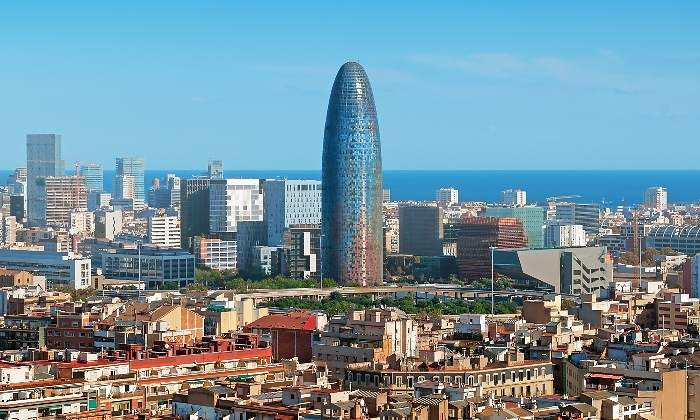

Bienvenidos
Barcelona es una ciudad española, capital de la comunidad autónoma de Cataluña, de la comarca del Barcelonés y de la provincia homónima. Con una población de 1 620 343 habitantes en 2018,6 es la segunda ciudad más poblada de España después de Madrid, y la undécima de la Unión Europea. El área metropolitana de Barcelona, incluida en el ámbito metropolitano de Barcelona, cuenta con 5 029 181 habitantes (2011), siendo así la sexta ciudad de mayor población de la Unión Europea.78
Detalles

La historia de Barcelona se extiende a lo largo de 4000 años, desde finales del Neolítico, con los primeros restos hallados en el territorio de la ciudad, hasta la actualidad. El sustrato de sus habitantes aúna a los pueblos íberos, romanos, judíos, visigodos, musulmanes y cristianos. Como capital de Cataluña y segunda ciudad en importancia de España, la Ciudad Condal ha forjado su relevancia con el tiempo, desde ser una pequeña colonia romana hasta convertirse en una ciudad valorada internacionalmente por aspectos como su economía, su patrimonio artístico, su cultura, su deporte y su vida social. Barcelona ha sido escenario de diversos acontecimientos internacionales que han contribuido a consolidarla, desarrollarla y darle proyección mundial. Los más relevantes han sido la Exposición Universal de 1888, la Exposición Internacional de 1929, los Juegos Olímpicos de 1992 y el Fórum Universal de las Culturas 2004. Es también sede del secretariado de la Unión para el Mediterráneo.10 En la actualidad, Barcelona está reconocida como una ciudad global por su importancia cultural, financiera, comercial y turística. Posee uno de los puertos más importantes del Mediterráneo y es también un importante punto de comunicaciones entre España y Francia, debido a las conexiones por autopista y alta velocidad ferroviaria. El aeropuerto de Barcelona-El Prat, situado a 15 km del centro de la ciudad, fue utilizado por más de 47,2 millones de pasajeros en 2017.11
| BARCELONA | LUGARES DE INTERES | |||
|---|---|---|---|---|
| SAGRADA FAMILIA | EL FORUM | PARC GÜELL | CAMP NOU | EL BARRI GOTIC (CATEDRAL) |
|
26,90€ + IVA | 36,90€ | ||
| HORARIO DE ENTRADA (9:00) | 26,90€ + IVA | 36,90€ + IVA | 46,90€ | |
| HORARIO DE SALIDA (18:00) | 36,90€ + IVA | 46,90€ + IVA | 56,90€ | |